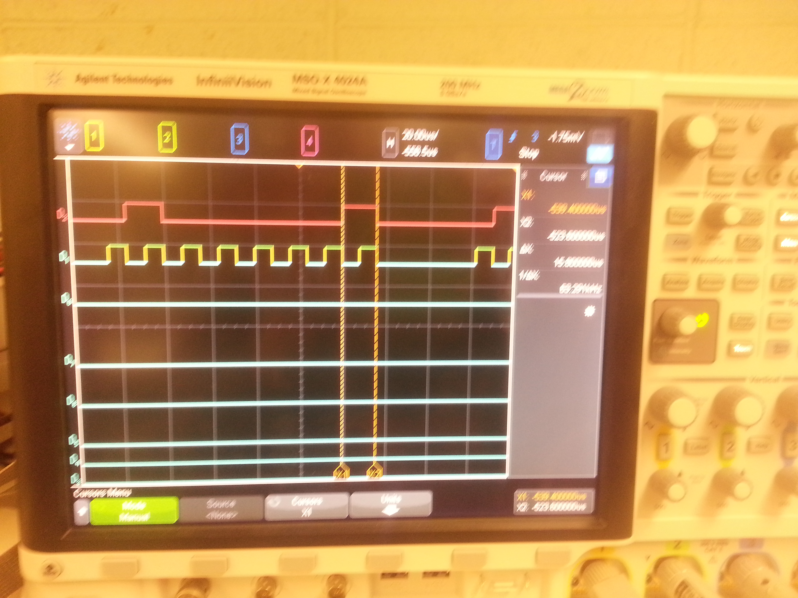

Matt McMunigle's Notebook
Week 01
January 15, 2014 (2 hour):
Met as a team to work on preliminary project proposal.
Open source code was explored for projects similar to the proposed Every1 DJ design.
WEEK 01 SUMMARY
Accomplishments: Submitted preliminary project proposal.
Weekly Work Total: 2 hours
Project Work Total: 2 hours
Week 02
January 22, 2013 (2 hour):
Created first draft of final project proposal.
Need to finalize PSSC and review draft with with team members.
January 23, 2013 (1.5 hour):
Began searching online for possible onboard
computers to fill the need of our project. Initial decision was
Raspberry Pi. Documentation was reviewed to understand the
capabilities and requirements of the rpi.
WEEK 02 SUMMARY
Accomplishments: Submitted final project proposal
Weekly Work Total: 3.5 hours
Project Work Total: 6.5 hours
Week 03
January 28, 2013 (2 hour):
Started Homework 2, PCB design exercise.
During this activity a switching power supply circuit was duplicated using the National Semiconductor
LM2675. The transition from schematic to board proved difficult and needed the assistance of TA to complete.
January 39, 2013 (1.5 hour):
During weekly lab final PSSC's were informallly accepted.
A Raspberry Pi was ordered and should arrive within two days.
January 30, 2013 (1 hour):
Homework 2 was completed with the help of the TA.
WEEK 03 SUMMARY
Accomplishments: Homework 2 - PCB Design
Weekly Work Total: 4.5 hours
Project Work Total: 11 hours
Week 04
February 6, 2013 (1.5 hour):
Team meeting was held to complete Homework 3.
During the meeting parts were decided upon and the majority of the assignment was completed.
February 8, 2013 (3 hour):
Received Raspberry Pi from teammate and began
steps to load an OS. New Out Of Box Software (NOOBS)
was loaded onto the formated SD card. Raspbian OS was chosen based
on user reviews, capabilities and documentation. The OS was then installed and the RPI became functional!
The wifi configuration was modified and some time was spent exploring the existing applications. A HDMI to VGA
converter was purchased to avoid having to use living room tv. A USB hub was also purchased to allow a mouse and
keyboard to be used while the wifi dongle is attached.
WEEK 04 SUMMARY
Accomplishments: Completed Homework 3 and Raspberry Pi has OS loaded
Weekly Work Total: 4.5 hours
Project Work Total: 15.5 hours
Week 05
February 12, 2013 (2 hour):
During the required lab we reviewed our progress with Homework 4 and continued to finalized our parts list.
It was pointed out by the TA's that the parts list was missing components related to power. After the discussion regulators and a power
supply were added to the list. Some components have been added and others will continue to be purchased.
February 14, 2013 (1.5 hour):
Homework 4 was thoroughly reviewed and modified after receiving some negative feedback on Homework 3.
Once the team was satisfied with the report and it had been turned in the attention was shifted to the test board provided by Joe.
Time was spent reviewing a tutorial and online help for the MPLAB IDE. Unfortunately we did not have a power supply for the micro
during this time so there wasn't much of an accomplishment. The short term goal is communicate between the Raspberry Pi and Micro through
serial.
February 15, 2014 (3 hours):
After receiving the correct power supply from Joe it was time to set up the MPLAB IDE and attempt to run a test program on the micro.
Most of this time was spent reading online help forums trying to get the IDE to compile a program and recognize the MPLAB ICD 3 in-circuit debugger.
It was discovered that a separate C compiler must be installed and selected, instead of coming with the program as expected. The issue with the ICD 3
turned out to be diver incompatibility between different versions of the MPLAB ICD software. Finally, a test program was compiled and programmed on the micro.
WEEK 05 SUMMARY
Accomplishments: Homework 4 submitted
Weekly Work Total: 6.5 hours
Project Work Total: 22
Week 06
February 19, 2014 (2.5 hours):
During mandatory lab session there were discussions with the course staff regarding the schematic and Homework 5 as a whole.
Work continued on the hardware narrative homework and individual sections were assigned within the group. Continuing from the success of
getting MPLAB IDE successfully working the team created a test program to blink the LED's on the PIC development board. This may not be a huge
accomplishment but it was exciting to finally see the microcontroller perform some 'action'.

February 19, 2014 (2 hours):
Continued to work on Homework 5, hardware narrative. This included research on the communication data rates available between the microcontroller
and other components such as Raspberry Pi
and the LED Driver.
February 21, 2014 (4 hours):
A team meeting was held to continue progress on the hardware narrative report. Much of the time was dedicated to coming to a consensus
regarding the port assignments for each of the subsystems. It was decided that the internal oscillator would be used for the microcontroller
and a frequency of 4MHz was chosen. Using scalers the appropriate clock speed will be attained for each of the peripherals.
February 22, 2014 (2 hours):
Research was conducted to better understand the steps necessary to successfully stream a song using the GrooveShark API.
It was discovered that Grooveshark is pretty strict on their licensing laws:
Grooveshark Streaming. and an API key was requested.
February 22, 2014 (2 hours):
The Raspberry Pi was set up at the team station for our first test of the SPI ports. After once again struggling
with the wifi adapter for the RaspberryPi an ethernet connection was established and the github repository was
successfully cloned on the rpi. Using the SPI python walkthrough provided by 100randomtasks.com
the serial ports showed some activity. No specific values were successfully read or written but that is the next goal.
WEEK 06 SUMMARY
Accomplishments: Homework 5 completed and Raspberry Pi SPI is talking
Weekly Work Total: 12.5 hours
Project Work Total: 34.5 hours
Week 07
February 24, 2014 (4 hours):
SPI successful, scoped (img here)
Overcame a while loop stuck in a lib function, we just wrote our own listening code
More problems with the damn IDE toolchain
Soldered a prototyping connector to connect micro jumper port and Rpi header pins
February 24, 2014 (3 hours):
The focus of today's work session was once again to communicate between the microcontroller and the Raspberry Pi using SPI.
After confirming that the Raspberry Pi must be the master in the SPI master slave interface, a successful array of data was sent
from the raspberry pi to the microcontroller and stored in a buffer. The signals were viewed using a logic analyzer to confirm the correct
clock rate (62.5MHz) and the data being sent.
The setup that was used to test SPI communications:

February 25, 2014 (3 hours):
Since the Rpi SPI was not operating correctly, a quick search was performed for alternatives for SPI
driving code. The python example was abandoned, and a C programming example was discovered (linked within) from the following
blog tutorial.
At this point, Rpi SPI was scoped alone; SUCCESS! See the code and initial results here:


Some additional code was authored to display (on the microcontroller) multi-byte transmissions from the Rpi.
In addition, clock frequencies were matched to facilitate what will eventually be bidirectional communication.
See evidence of frequency (62.5KHz) matching here:

This experiment was successful! (Multiple transmissions, one way: Rpi -> micro)
It was briefly noted that since Rpi SPI peripherals are all master-mode hardware, a switching
protocol must be developed in software on the micro side so that it may
operate in Master or Slave mode as appropriate to each SPI peripheral (Rpi, LCD).
February 26, 2014 (4 hours):
Mandatory Lab was held. Descussion centered around streaming API selection and different options. Tinysong
(the current metadata API) returns a link to Grooveshark flash music player, but that will not suffice for
Rpi streaming due to system incompatibilites. Grooveshark's streaming API would be the best option, but
it is unclear whether API key access will be granted. Should the Grooveshark API prove inaccessible,
two main alternatives methods were selected, in order of team preference:
- Anonymizing Grooveshark API calls with TOR to allow for previously issued keys to be reused
- Downloading youtube videos, ripping out audio on the fly, and playing from disk
February 27, 2014 (6 hours):
Upon inspection of the existing PCB layout, it was determined that all of the different voltages (3.3V, 5V, 12V) were connected together in the schematic and the PCB board.
This turned out to be a huge fix since nearly every power and ground trace need to be re-routed. The trace widths were changed for all power and
ground signals since previously they had all been set to 12 mil which is much to small for the amount of current required. It was discovered that
we had no connector for the power supply so the appropriate 3.5mm female connector was found in eagle and added to the layout.
The PCB board at the conclusion of the days work:

February 28, 2014 (8 hours):
Today's session resulted in the completion of the initial PCB layout and the submission of homework 6 (PCB Layout).
From the existing layout, many changes were made. Among the highlights are:
- Switching from BJT motor control circuitry to the L239D Motor Driver IC
- Reassigning several incorrect pin assignments from the microcontroller to the LED driver
- Changing to a 6-pin RJ-11 connector and routing programming pins correctly
- Routing power and ground to microcontoller bypass capacitors
- Creating all power and ground planes
The report for homework #6 was completed in parallel to the PCB layout activities.
See a first-revision PCB layout here:

March 1, 2014 (1 hours):
A brief team meeting was held today to divide Design Review presentation subtasks.
WEEK 07 SUMMARY
Accomplishments: Homework 6 - PCB Layout
Meaningful communication one-way on SPI
PCB Layout
Weekly Work Total: 29 hours
34.5
Project Work Total: 63.5 hours
Week 08
March 2, 2014 (1.5 hours):
Design review slides and presentation prep
March 3, 2014 (7 hours):
filled rx buffer, but now reading and writing at the same time is hard
concurrency of SPI and streaming/web code will be an issue
successfully have bidirectional SPI, now trying to get meaningful operation (simulate real spi messages)
no way to distinguish bt Rx and Tx at interrupt level
presenation practice
reworked schematic
- put 0 ohm res bt agnd and gnd
- added series resistors on LED driver
- RJ-11 con - used MPlab reference for pin connections
- sought replacement for power supply - current requirements
4 hours
Made part for power supply, added to pcb board
routed all new signals/parts
increased trace lengths for power and ground.

March 4, 2014 (2 hours):
Design review practice and team meeting to discuss feedback from course staff and peers.
March 5, 2014 (3 hours):
Updated PCB board with parts and connections that changed as a result of the design review. The ground plane that had
been created was not named appropriately and therefore was not actually connected to ground. This was fixed as well as adding
rank to different planes in order to avoid overlapping.
March 6, 2014 (3 hours):
Power components continue to change as we find new requirements that had previously been overlooked. The footprint of the bulk capacitors were
much too small.
Audio drivers were installed on the Raspberry Pi. A few settings such as output volume and output device were modified. The audio originally
is set to output from HDMI and this was changed to analog output. A wav file was downloaded and successfully played on powered speakers.
When the oscilloscope was set up to view the output on headphone wires nothing but noise was heard.
March 7, 2014 (1 hours):
Went in with Courtney to discuss a few concerns with Joe. The audio amplifier design was modified in order to regulate the negative feedback.
The footprint of a few power components (capacitor and inductor) were determined to be too small and will need to be changed.
March 8, 2014 (2.5 hours):
Set up test circuit for LCD testing. Online documentation on the NHD-2.23-12832UCB3 is limited but some source
code was found that provided the initialization sequence necessary to turn the LCD on and send data.
Week 08
WEEK 08 SUMMARY
Accomplishments:
Weekly Work Total: 19 hours
Project Work Total: 82.5 hours
Week 09
March 9, 2014 (5 hours):
Worked on getting LCD to turn on and display anything.Each command was analyzed using the oscilloscope
and appeared to be sent correctly and in the right order. Was able to briefly get some random pixels to light
up but even this stopped working.

It was discovered that the reason the screen lit up once earlier in the day but had appeared
'off' since then was due to the entire RAM space in the LCD being initialized to 0. When the LCDwrite module tried to
write a character the starting column and row were not reset to 0, but were instead at the very end of the RAM space
(not visible on the LCD). Once this was fixed the LCD was successfully initialized and data was displayed.

March 11, 2014 (5 hours):
The schematic was updated with the final power and audio circuitry components. The component changes included
using one stepper voltage regulator for 12V to 5V and one LDO for 5V to 3.3V. All of the bulk capacitors had been
changed to correctly match the part footprint. The diodes were changed to surface mount.
Once these parts had been finalized on the schematic the board routing began. The layout of the voltage regulator
followed the data sheet recommendation as closely as possible. The audio circuitry was kept compact and separate
from the other components due to it having and anlog ground. The trace widths for power and ground were kept wide to
avoid overheating with the high current requirements. Vias were added to connect the ground plans on the top and
bottom.
March 12, 2014 (2 hours):
During lab the current status of the PCB board and schematic were discussed with the course staff. Overall the results
were positive. A few small changes were made including removing acute angles and adding a hole for a stabilizing piece
on the underside of the dc power jack.
March 13, 2014 (1 hours):
The board was submitted to the online check. There was an issue of a hole being too close to the ground plane. This issue
was resolved and resubmitted through the online checker. Success!
March 14, 2014 (0.5 hours):
Went to the lab to finish the required checkoffs before submitting the PCB design. This included sending the course
staff a .zip file of all the pcb files and board dimensions. The board should arrive the week after spring break.
WEEK 09 SUMMARY
Accomplishments: The LCD was correctly initialized and displaying letters. Also the PCB board was completed and submitted for fabrication.
Weekly Work Total: 13.5 hours
Project Work Total: 96 hours
Week 10
WEEK 10 SUMMARY
Accomplishments: No work was completed this work due to Spring Break.
Weekly Work Total: hours
Project Work Total: hours
Week 11
March 23, 2014 (2 hours):
A team meeting was held to review our current progress and to assign tasks going forward. Once the
managerial work was complete the SPI
reconvened with team, caught up on spring break work
agenda and list of crap to do yet
discussed SPI request/response protocol
peer evaluations
NOTEBOOK NEXT SUNDAY
March 14, 2014 (5 hours):
The focus of today's time spent in lab was understanding the ADC and PWM modules.
March 29, 2014 (6 hours):
Today's accomplishments were very disappointing for the amount of time spent. The goal of today was
to finish up SPI testing and move on to I2C communication between the microcontroller and the LED driver.
Once the test circuit was set up even simple communication between the Raspberry Pi and microcontroller were
no longer working. After spending a great deal of time debugging it was determined that the oscilloscope
connecters were causing the signals to be tied high. It was not determined why this was the cause
but once the connector was switched the communication was close to the expected output. It was also
discovered that the ribbon cable made for our Raspberry Pi serial connectors had 1 pin that was not operating
correctly. Once these issues were dealt with the SPI communication was finally working again. However, the
LCD was not operating as expected anymore. After unsuccessfully debugging the LCD connections I2C sample code
was written but not tested yet.
WEEK 11 SUMMARY
Accomplishments:
Weekly Work Total: hours
Project Work Total: hours
March 30, 2014 (3 hours):
After yesterday's disappointing testing today was more productive. The reason for the LCD not working
as expected was discovered to be 'noise' from the Raspberry Pi connections. Since all SPI share a clock
this is a serious issue. Once the Raspberry Pi connector was unplugged the LCD was once again turing on and
displaying characters. The LCD function was enhanced to allow strings as arguments from main. I2C communicaiton
was tested today and after addressing a few issues was successful. The primary issue for I2C was having to clear
the interrupt flag in software since it was not done in hardware like many other interrupts. Finally the ADC module
was written and tested. After reviewing the datasheet thoroughly the results of the A/D conversion does not seem to be
completely accurate.
Week 12
WEEK 12 SUMMARY
Accomplishments:
Weekly Work Total: hours
Project Work Total: hours
Week 13
WEEK 13 SUMMARY
Accomplishments:
Weekly Work Total: hours
Project Work Total: hours
Week 14
WEEK 14 SUMMARY
Accomplishments:
Weekly Work Total: hours
Project Work Total: hours
Week 15
WEEK 15 SUMMARY
Accomplishments:
Weekly Work Total: hours
Project Work Total: hours
Week 16
WEEK 16 SUMMARY
Accomplishments:
Weekly Work Total: hours
Project Work Total: hours
{kind=link}
{kind=link}